WWDC 2022 : Rendre accessible une application en mode Single App
Cette présentation visualisable sur le site développeur officiel d'Apple (session 10152) présente les différents moyens de mettre en oeuvre le mode Single App en détaillant chacune des possibilités offertes par les OS.

Les thèmes abordés ainsi que leur référence temporelle au sein de la vidéo sont décrits ci-dessous :
Les modes Single App représentent le moyen le plus approprié pour restreindre les droits d'accès à d'autres fonctionnalités que celles proposées par une application.
Ces modes peuvent être particulièrement utiles dans les situations où l'utilisateur ne doit pas accéder à d'autres informations que celles fournies par l'application proposée.
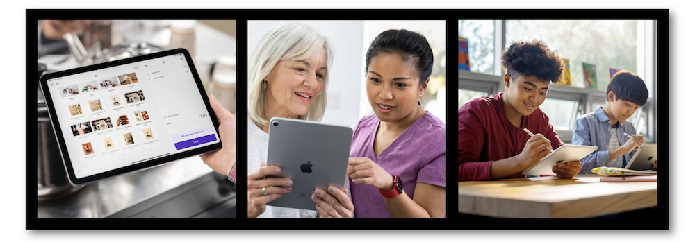
Le premier mode directement accessible par les réglages d'un terminal est l'accès guidé.
Accès guidé #
Cette fonctionnalité permet d'instaurer un environnement avec des droits d'accès limités pour l'utilisateur.
Les façons spécifiques d'allumer et d'éteindre ce mode s'accompagnent d'options qui permettent de coller au mieux aux possibilités offertes dans ce cadre.
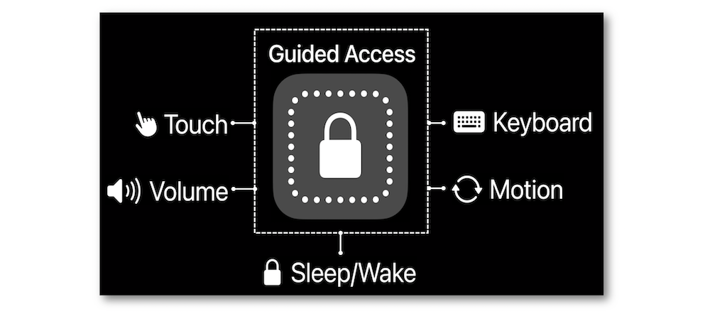
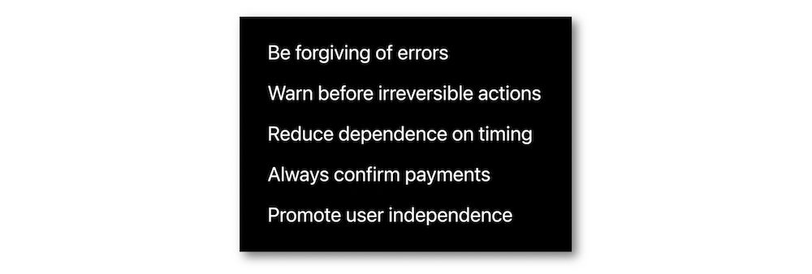
La flexibilité offerte par ce mode permet d'adapter précisément un cadre aux différentes catégories d'utilisateurs susceptibles d'évoluer en son sein.
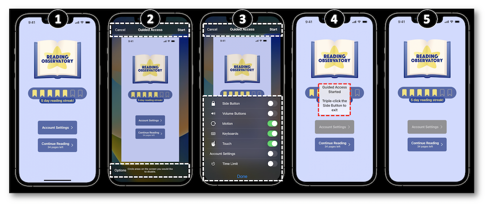
L'étape principale de cette implémentation s'appuie sur la conformité de l'AppDelegate au protocole UIGuidedAccessRestrictionDelegate.
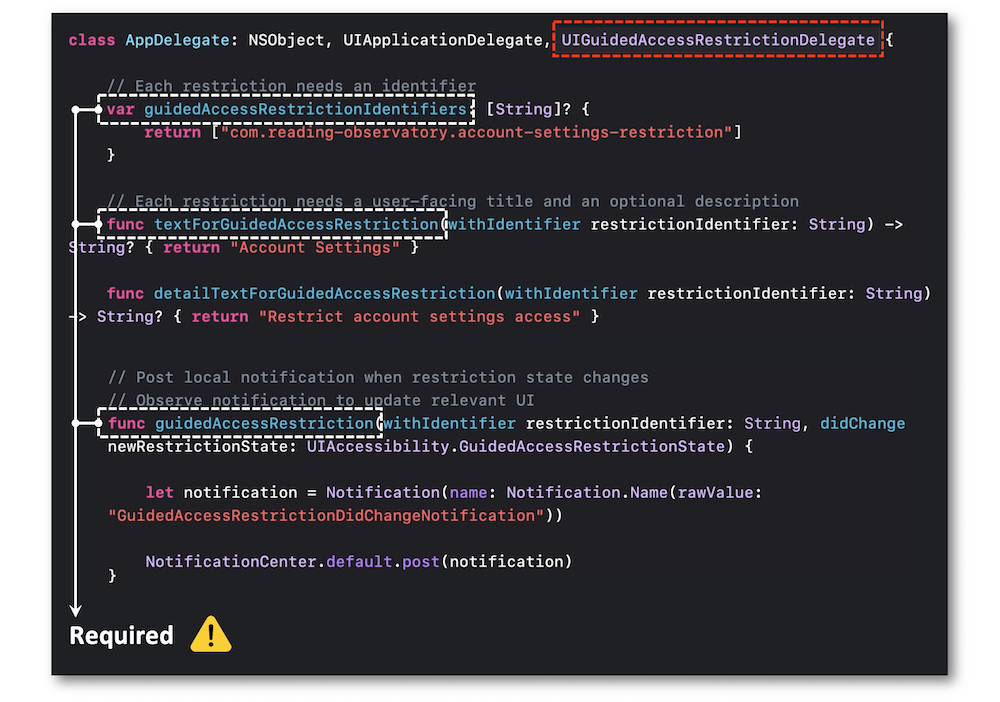
À noter que l'élément UIAccessibility propose une fonction statique pour savoir si une restriction personnalisée est mise en oeuvre.
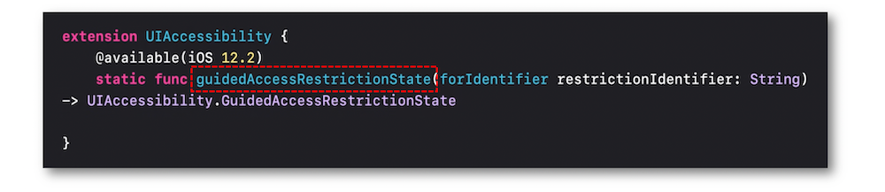
L'accès guidé représente l'assise des différents modes Single App introduits programmatiquement dans une appplication.
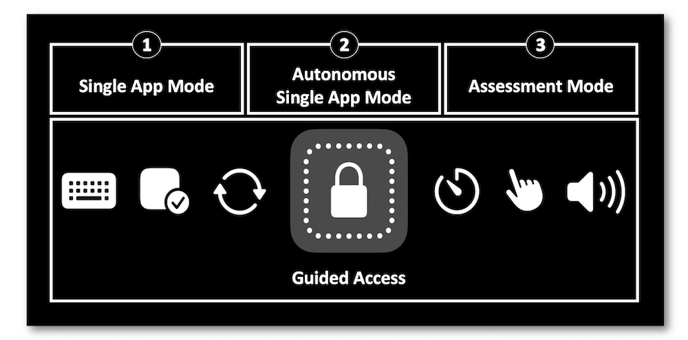
Les modes Single App #
La différence majeure entre ces trois modes et l'accès guidé réside dans leur gestion fonctionnelle contrôlée uniquement par le code.
🎬
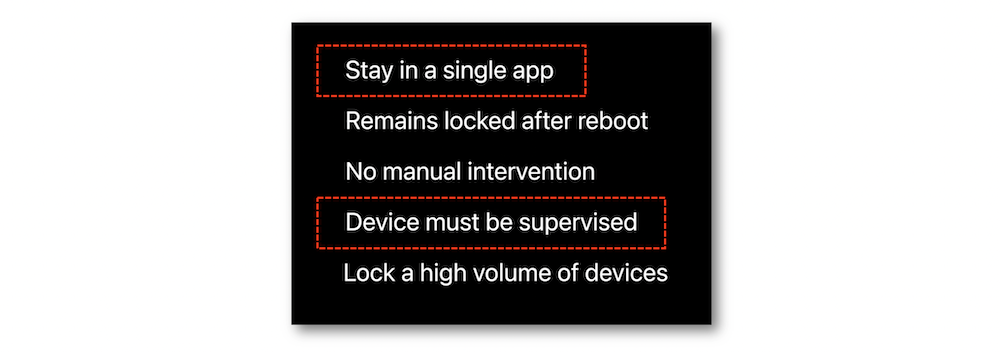
La gestion du terminal qui embarque cette fonctionnalité peut se faire via l'application Apple Configurator.
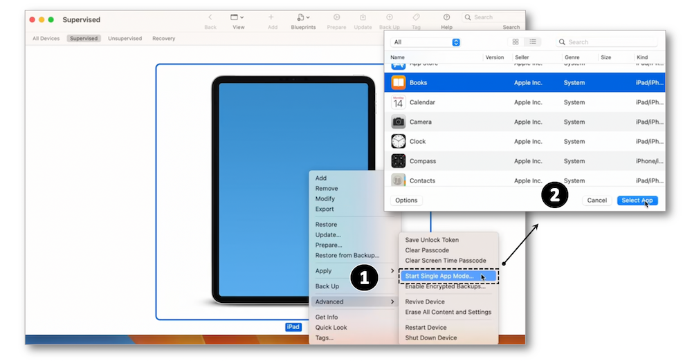
🎬
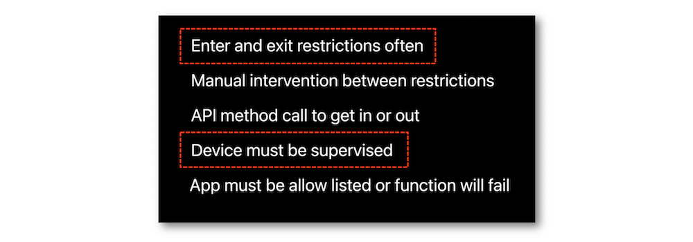
L'activation et la désactivation de ce mode sont intégralement gérées par quelques lignes de code.
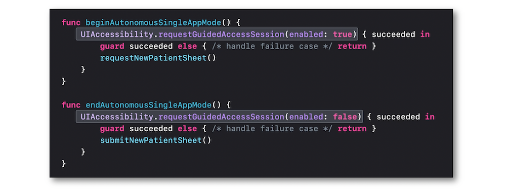
L'observation et la vérification de modifications au sein de ce mode peuvent être notifées par l'élément UIAccessibility.
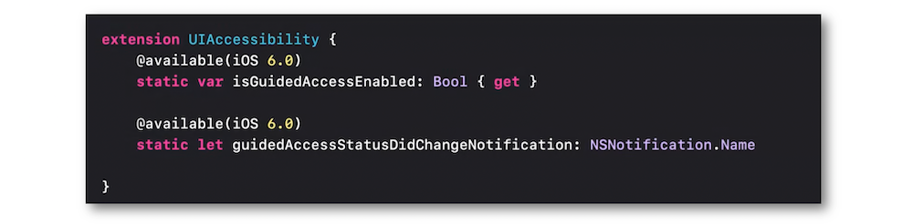
"The app which wants to use this API must have the proper supervision and management, including allowlisting the app's bundle ID as an allowed application for Autonomous Single App Mode"⟹ 🎬
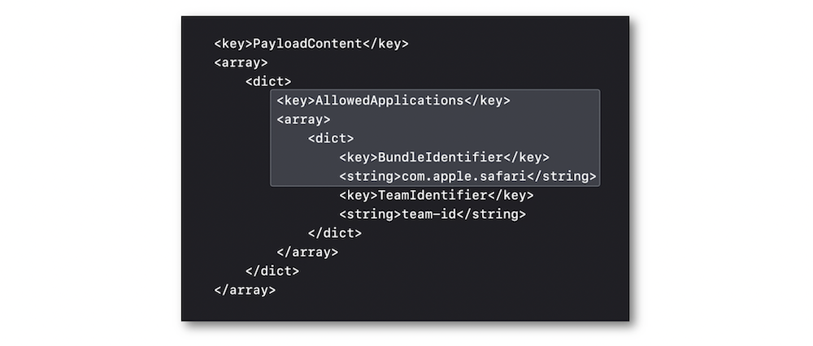
🎬
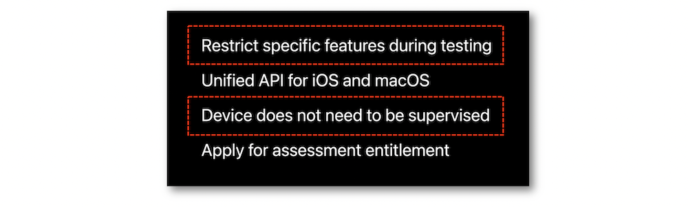
Ce mode est destiné à la mise en place de testset à l'évaluation scolaire à l'aide de terminaux qui n'ont pas besoin d'être supervisés comme les deux autres modes.
Cependant, il est impératif d'avoir une validation Apple sur l'application concernnée pour utiliser le framework de la configuration de l'évaluation automatique.
Accessibility API #
Les modes précédemment évoqués permettent d'activer et de désactiver des options d'accessibilité dans le but d'améliorer l'expérience utilisateur.
Une fois de plus, c'est l'application Apple Configurator qui peut permettre ce type d'actions mais uniquement avant d'entrer dans le mode en tant que tel.
Cependant, il est aussi possible de réaliser ce genre d'intervention programmatiquement quand le mode est actif grâce à l'élément UIAccessilibity.
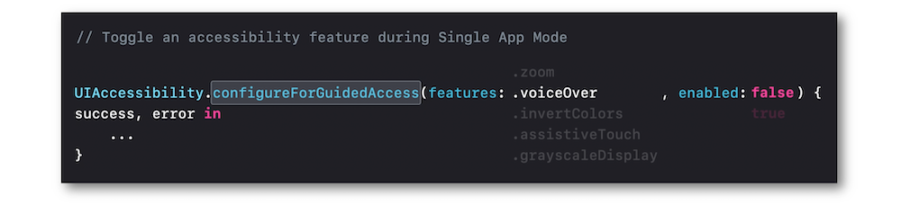